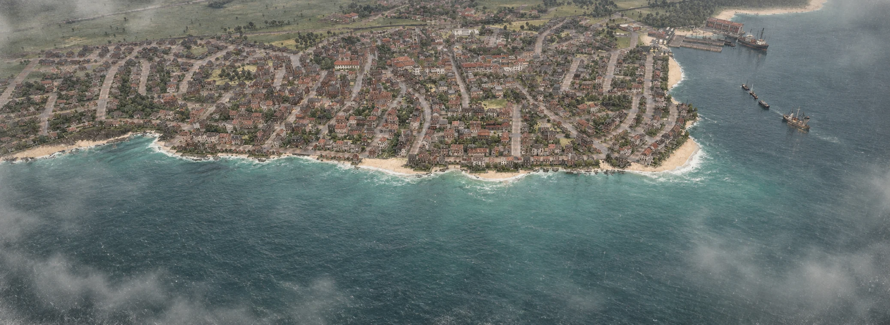

Neue Industrien, wachsende Städte und die Grenzen des Fortschritts.
Abgeschlossene Ausgabe · Detailstand 15. Oktober 1917

Bourg-l’Écorce · Archivansicht aus der Bildreportage von 1913. KI-bearbeitete Spielaufnahme; kein Bildbeleg für den Stand von 1917.
1910 stand eine Frage am Ende unseres ersten Dossiers: Würde der Fortschritt über die verbundene Küste hinauswachsen? Sieben Jahre später lautet die Antwort: an einigen Orten sehr deutlich. Auf Roche-Noire hat sich die Einwohnerzahl nahezu verdreifacht. In Sin-le-Noble treffen die Hoffnungen auf eine Möbelversorgung auf die praktische Frage, wie Holz hin und fertige Ware zurückkommt. Zugleich bleiben Wünsche offen – auch dort, wo längst Züge und Schiffe verkehren.
I · Belegte Entwicklung
Fast doppelt so viel Netz
82 → 154Linien · +88 %
474 → 882Fahrzeuge · +86 %
368 → 1.086Einwohner Roche-Noire · +195 %
Vergleich: 11. Juli 1910, Endpunkt des ersten Dossiers, mit dem Detailstand vom 15. Oktober 1917. Prozentwerte gerundet.
Die Gesellschaft bedient heute 72 Linien mehr als am Ende der ersten Ausgabe. Ihr Fuhrpark ist um 408 Fahrzeuge gewachsen. Das ist ein erheblicher Ausbau; über die Qualität jeder einzelnen Verbindung sagen diese Summen allein jedoch wenig aus. Mehr Fahrzeuge können häufigere Verbindungen ermöglichen, aber auch lange Wege, zusätzliche Umläufe oder geringe Kapazitäten ausgleichen.
Für die Bewohner entsteht daraus eine neue Erwartung. Wo früher schon die Verbindung selbst bemerkenswert war, wird nun gefragt, ob sie auch zuverlässig mit dem nächsten Weg zusammenpasst. Der Maßstab des Fortschritts verschiebt sich: vom ersten Anschluss zur Versorgung im Alltag.
Bourg-l’Écorce bleibt unter diesen Orten das größte Zentrum: 3.252 Einwohner gegenüber 2.225 im ersten Dossier. Port des Alizés wächst auf 2.178, Valmorin auf 1.278. Der Ausbau begleitet damit weiterhin das Wachstum der alten Küstenstädte.
Besonders auffällig ist Roche-Noire. Aus 368 Einwohnern sind 1.086 geworden. Die Kohleinsel lässt sich inzwischen kaum noch als unveränderte Außenwelt beschreiben. Das gleichzeitige Wachstum von Verkehr und Bevölkerung ist belegt; wie viel davon eine einzelne Linie verursacht hat, lässt sich aus diesen Zahlen nicht ableiten.
Sin-le-Noble: ein kleiner Ort mit neuer Aufgabe
Im Monatsstand Juli 1910 zählte der Ort 102 Einwohner; heute sind es 199. Das Möbelkonzept des Direktors gibt ihm eine Rolle im Austausch zwischen den Städten. Der gemeldete Netzanteil der Wege liegt bei rund 76 %. Dieser Exportwert beschreibt die Nutzung des Verkehrsnetzes, nicht die Zufriedenheit der Bewohner.
Vauclaire: ein neuer Name im Blickfeld
Der früher als Sarrians geführte Ort steht im Juli 1910 mit 217 Einwohnern in den Monatsakten, heute mit 312. Die Namenshistorie verzeichnet Sarrians bis zum 28. November 1915. Knapp 50 % Netzanteil zeigen, dass Verkehr hier inzwischen zum Alltag gehört. Ein genaues Eröffnungsdatum lässt sich daraus nicht bestimmen.
III · Gemessene Versorgung und Einordnung
Der kleine Luxus kommt an – teilweise.
Im ersten Dossier standen Möbel in Bourg-l’Écorce und Kleidung in Valmorin noch unter den ungedeckten Wünschen. Der neue Detailstand meldet in Bourg-l’Écorce 41 gedeckte Einheiten Möbel bei 390 Bedarf; in Roche-Noire sind es 47 bei 190. Das entspricht rund 11 beziehungsweise 25 %. Kleidung in Valmorin erreicht 50 von 113, also rund 44 %.
Damit ist Versorgung in diesen Feldern messbar geworden. Eine einzelne Aufnahme belegt aber keine lückenlose Lieferfolge. Auch günstige Ladenpreise oder kürzere Lieferzeiten können wir daraus nicht ablesen. Der Möbelbedarf wird im Export zudem dem Bereich Industrie zugeordnet: Die Vorstellung eines neuen Schranks in jeder Wohnung wäre eine erzählerische Übertragung, keine Messgröße.
Auch der Fortschritt hat Leerstellen. Rum bleibt in den aktuellen Warenfeldern von Port des Alizés und Bourg-l’Écorce vollständig ungedeckt. Die Versorgung erweitert sich, ohne dass alle Wünsche zugleich erfüllt werden. Gerade diese Gleichzeitigkeit macht die neue Epoche aus: mehr Möglichkeiten und weiterhin sehr konkrete Grenzen.
IV · Archivgespräch · Antworten des Spielers
Holz hinaus. Möbel zurück.
Das Gespräch mit dem Direktor aus unserer Ausgabe April 1914 beschreibt die Absicht hinter der Möbelverbindung. Die folgenden Auszüge stammen aus dem tatsächlich geführten Spielerinterview; die Antworten wurden damals sprachlich redigiert. Sie werden hier als historische Aussagen wiedergegeben, nicht als neue Zusagen für 1917.
Was unterscheidet den Möbeltransport von der Versorgung mit Kleidung?
Bei der Kleidung sind die Entfernungen groß. Unsere Schiffe können die Lieferungen momentan nicht in der gewünschten Zeit bewältigen. Bei den Möbeln passen die Wege besser zu den Transportmitteln, die uns heute zur Verfügung stehen.
Woran erkennen Sie, ob eine zunächst schwierige Verbindung eine wirtschaftliche Perspektive hat?
Wir schauen vor allem darauf, welche Möglichkeiten es gibt, Verbindungen miteinander zu kombinieren. Unsere Fahrzeuge sollen möglichst wenige Leerfahrten machen. Entscheidend ist deshalb auch, ob wir auf dem Rückweg eine weitere Ladung mitnehmen können.
Wie setzen Sie diesen Gedanken bei Sin-le-Noble um?
Wir bringen Holz von der Hauptinsel nach Sin-le-Noble. Die Möbel gehen anschließend zurück. So lassen sich Hin- und Rückweg sinnvoll nutzen – ein Gewinn für beide Seiten.
Zum Abschluss: Wenn die Bewohner in fünf Jahren auf die heutige Zeit zurückblicken, welche Verbesserung sollen sie in ihrem Alltag am deutlichsten spüren?
Ich wünsche mir volle Läden und die Möglichkeit, auch in anderen Städten zu arbeiten. Und ich möchte, dass wir stolz darauf sein können, was wir in dieser Zeit gemeinsam geschaffen haben.
Die Route und ihre wirtschaftliche Logik sind Erläuterungen des Spielers. Preise, vermiedene Leerfahrten und langfristige Beschäftigungseffekte wurden damit nicht gemessen. Zum Geschichtenarchiv des Journals.
V · Fuhrpark und Einordnung
Mehr Schiffe sind noch keine schnelleren Schiffe.
Fahrzeuge nach Art · Monatsstände Juli 1910 und Oktober 1917
Verkehrsmittel
Juli 1910
Oktober 1917
Personenzüge
10
13
Güterzüge
10
22
Straßenbahnen
25
45
Busse
84
145
Lastwagen
165
303
Passagierschiffe
7
18
Frachtschiffe
153
308
Abgleich der Exportwerte: Die aufgeführten Fahrzeugarten summieren sich auf 454 (1910) und 854 (1917), während das Gesamtfeld 474 beziehungsweise 882 meldet. Die Differenz von 20 beziehungsweise 28 Fahrzeugen ist in dieser Ausgabe nicht aufgelöst. Gesamtvergleich und Aufteilung werden deshalb als getrennte Exportangaben ausgewiesen; eine zusätzliche Fahrzeugart wird nicht erfunden.
308 Frachtschiffe und 303 Lastwagen bilden die größten Gruppen. Zusammen sind das gut 69 % des gesamten Fuhrparks. Der Güterverkehr prägt damit die Gestalt der Gesellschaft. Zugleich fahren inzwischen 145 Busse und 45 Straßenbahnfahrzeuge; auf zwei Personenzuglinien sind 13 Züge eingesetzt.
Im Interview bezeichnete der Direktor die Schifffahrt als Flaschenhals und hoffte darauf, technische Fortschritte von Straße und Schiene auf das Wasser übertragen zu können. Die Flottenzahlen bestätigen den großen Stellenwert des Wassertransports. Ob bestimmte Waren heute schneller ankommen, müssten jedoch vergleichbare Transportzeitmessungen derselben Wege zeigen. Eine Verdopplung der Zahl der Frachtschiffe ist kein Nachweis einer halbierten Lieferzeit.
Auch finanziell ist eine saubere Unterscheidung nötig: Der Oktober-Monatsstand meldet rund 751,9 Millionen in der Kasse. Das ist ein Bestand, kein Jahresgewinn und kein Beleg dafür, dass jede neue Verbindung rentabel arbeitet. Der Gedanke, Hin- und Rückfahrten mit Ladung zu verbinden, bleibt deshalb ein nachvollziehbares Betriebskonzept – sein Erfolg muss an den einzelnen Linien geprüft werden.
VI · Feuilleton · Fiktion
Was man sich auf den Inseln erzählt
Die folgenden Szenen und Figuren sind erfunden. Sie greifen die belegten Veränderungen auf und schaffen keine zusätzlichen Spielereignisse.
Am Tresen von Roche-Noire
Der Stuhl mit Aussicht
„Früher“, sagt der Wirt, „wusste ich, wem jeder Stuhl gehört. Heute muss ich fragen, ob jemand noch auf jemanden wartet.“ Ein Gast möchte wissen, ob das am Bevölkerungswachstum liege. Der Wirt antwortet, es liege zunächst daran, dass niemand sein Glas mitnehme, wenn er hinausgehe.
Am Nebentisch erklärt ein Mann, die Möbelversorgung sei das wichtigste Unternehmen der Gegenwart. Sein Nachbar widerspricht: Zuerst müsse der Rum kommen. Sie einigen sich darauf, dass man die Zukunft am besten sitzend erwarte.
Bezug: Roche-Noire wächst von 368 auf 1.086 Einwohner; Möbel sind teilweise gedeckt. Kneipe, Wirt und Gespräch sind erfunden. Die Rum-Bemerkung ist ein Figurenwunsch, keine Aussage über den Warenbedarf von Roche-Noire.
Gesellschaft in Port des Alizés
Eine Einladung, drei Fahrpläne
Madame de Bellombre hat zum Abend geladen und erstmals die Anreise auf die Rückseite ihrer Einladung drucken lassen. Ihre Cousine findet das unfein. Der Verleger findet es praktisch. Der eingeladene Ingenieur findet zwei Umsteigeverbindungen, über die er beim Essen sprechen möchte.
Als eine Dame den neuen Stoff ihres Kleides loben lässt, fragt jemand nach seiner Herkunft. „Von weit her“, lautet die Antwort. Wie weit, bleibt offen. Für den Rest des Abends genügt die Vermutung, es sei weiter gewesen als die Reise der Gäste.
Bezug: größeres Verkehrsnetz und die im Spielerinterview beschriebenen langen Kleidungswege. Gesellschaft, Figuren, Kleidung und Einladung sind vollständig erfunden.
VII · Redaktionelle Bilanz
Zusammenwachsen heißt, voneinander abhängig zu werden.
Das erste Dossier erzählte vom Schritt zum Fahrplan. Dieses erzählt davon, was danach geschieht: Städte wachsen weiter, weitere Orte gewinnen Bedeutung, und die Produktion eines kleinen Ortes kann für die Versorgung anderer Städte wichtig werden.
Die Antwort auf die Frage von 1910 fällt deshalb hoffnungsvoll, aber ungleichmäßig aus. Roche-Noire zeigt einen starken Wandel. Sin-le-Noble und Vauclaire erweitern die Geschichte. Montfougère wächst ebenfalls, meldet im aktuellen Stand jedoch nur rund 0,9 % Netzanteil. Anschluss und Nutzung, Wachstum und Versorgung laufen nicht überall im selben Tempo.
Die nächste Frage lautet: Kann die Gesellschaft die Verbindungen so verlässlich machen, dass die Bewohner mit ihnen planen können? Volle Läden und Arbeit in anderen Städten bleiben ein guter Maßstab. Die Messbücher von 1917 zeigen Fortschritte – und genügend offene Aufgaben für die nächste Ausgabe.
Quellen und Grenzen
Vergleichsbasis: eingefrorene Kennzahlen des Dossiers 1900–1910, Endpunkt 11. Juli 1910. Bei Sin-le-Noble und Vauclaire wird ausdrücklich der Monatsstand Juli 1910 verwendet.
Stadt- und Fuhrparkdaten: Detailmessung 15. Oktober 1917, erfasst am 15. Oktober 2026 um 18:19:03 Uhr. Der Monitor reicht bis 17. Oktober 1917; seine späteren Kurzwerte ersetzen hier keine fehlenden Detailwerte.
Einwohner bezeichnet belegten Wohnraum. Warenbedarf und gedeckte Mengen sind Exportwerte des Spiels, keine beobachteten Verkäufe an Haushalte. Die Definition des Netzanteils ist nicht unabhängig validiert.
Die Journal-Zeitreihen berücksichtigen den kanonischen Verlauf nach Spielzeit-Rücksprüngen. Lücken werden nicht durch erfundene Messwerte aufgefüllt. Das erste Dossier bleibt mit seinem damaligen Quellenstand erhalten.
Das Interview ist eine redigierte Spieleraussage. Feuilleton-Szenen sind Fiktion. Das Titelbild ist eine künstlerisch bearbeitete Archivaufnahme.
Diese Ausgabe ist abgeschlossen. Neue Exporte ändern das laufende Journal, nicht die hier festgehaltenen Kennzahlen. Quellenauszug dieser Ausgabe (JSON).